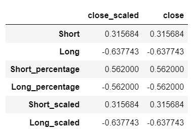
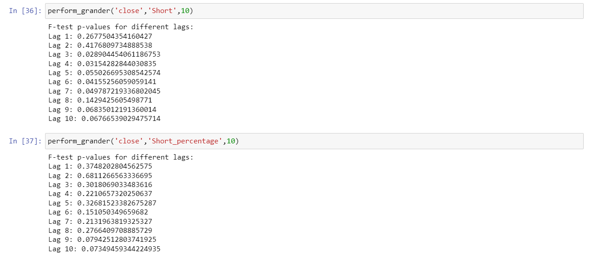
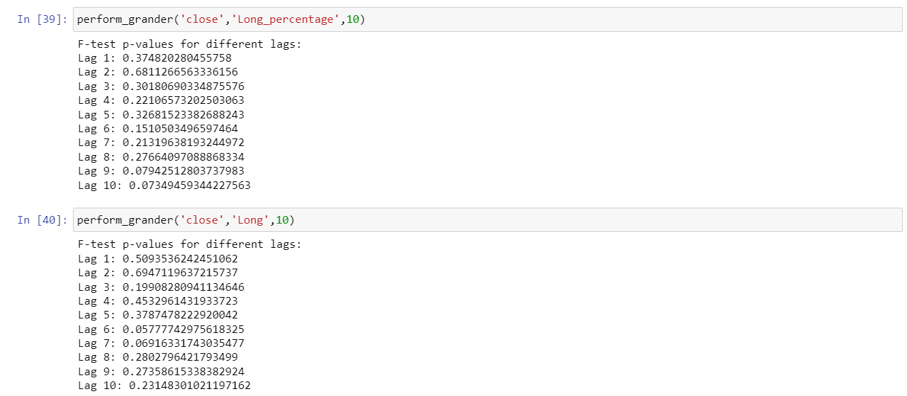

I’m not Warren Buffett, so I’m not going to say something like, "Technical analysis is like looking in the rearview mirror while driving. Fundamental analysis, on the other hand, is like looking through the windshield," because I think that’s a false statement. Technical analysis can also provide a forward-looking perspective too if you change the timeframe to a week or a month. To share with you, I began my investment journey with a book called "Gone Fishing with Buffett" and to be honest, I don’t think it’s beneficial for my trading journey as it oversimplifies so many concepts in fundamental analysis.
I think that the context of Fundamental Analysis in Forex and Equity is extremely different. In equity trading, everyone wants to make money from the market, so someone with better insight - usually an institutional trader - often comes out on top. Retail traders who buy a stock with strong fundamentals usually do so after the financial report has been released and the P/E ratio has already skyrocketed. While a stock with a solid financial report and a low P/E ratio may seem promising to retail traders, only those with more insider information know why the P/E ratio is low - and once again, those are usually institutional traders. My point is that making accurate fundamental analyses requires too much effort for retail traders.
However, in the Forex market, there is a group of players called "Commercial" who account for almost half of the transactions in some currency pairs. They are not there to make money from the market since it is not their core business. Their primary goal is to stabilize the value of the currency they are holding. Hence, with solid fundamental analysis, we can catch some profitable opportunities from them.
Before I dive into fundamental analysis, another easier analysis that indicates the supply and demand dynamics of the market is sentiment analysis. There are two types of sentiment analysis - retail sentiment and institutional sentiment. The analysis below will explore how the sentiment of these two groups of investors affects the price.
Before we dive into the data analysis part, let’s see what folk on
the internet think about retail sentiment.
Trader Nick and most youtubers: 95% of retail trader is
on the wrong side of the market, hence, we should take the opposite
position of the retail trader.
FXEmpire: Forex is the market where the smartest
individual traders see where the “dumb money” goes, so it’s best to
avoid trading along with it or against it. Because you can never know
how the smartest money would exploit the opportunity.
reddit people: I lost a lot of money by trying to short
at "resistances" and buy at "supports so as retail traders.
DailyFX: Publish a regular contrarian index openly
stating that its market view on a given pair is diametrically opposed to
that of the retail sector.
Above are the opinions of people on the internet, it seems everyone
tends to agree that we should trade against retail. However, let’s
explore the data.
The screenshot above displays the retail sentiment and price of
EURUSD. It can be observed that when the retail crowd holds long
positions, the price tends to decrease, whereas when retail investors
have short positions, the price tends to increase. However, we need to
validate this observation numerically. I have tried different approaches
to obtain the data from the chart above, including a computer vision
algorithm, but it has not been successful. If I were to obtain the data
from a provider such as TraderMade, it would be extremely expensive and
FXCM provides historical sentiment data only to premium accounts.
Another way to obtain the data is to run a Python script on the cloud
every hour to extract the sentiment. I will explore this option further
when I have more resources. Alternatively, I could manually input the
data into Excel, but this would require a significant amount of effort
and it’s a dump way to spend time.
Even though it may seem foolish to manually collect data from a website,
my curiosity overpowered me this time. I spent hours collecting position
sizes from the website manually, and here is the analysis.
Many YouTubers and bloggers on Reddit have previously emphasized the
importance of taking the opposite side of retail sentiment. However,
when we plot retail sentiment against price, it tells a completely
different story. Let’s analyze the chart below one by one, and I found
this insight extremely interesting.
1) Scaled price vs percentage of long position

My interpretation of the figure is that even though retail sentiment
is often considered to be incorrect, when the sentiment on the long side
reaches its peak, the price usually goes up. There are many assumptions
behind this observation, but I will discuss them in more detail later in
the analysis.
2) Scaled price vs scaled short position size

There are two observations from the figure above
1) When the short position size is low, the price usually goes up (4 out
of 5 times).
2) When the short position size is at its peak, the price might not go
down because it goes against the main trend.
3) Scaled price vs scaled long position size

From the figure above, it can be observed that when the long position
reaches its peak, the price tends to go up from there.
From the above three charts, it is difficult to conclude that retail
sentiment is a contrarian indicator, as we often see the price go up
when most retail traders are in a long position, and the price go down
when most of them are in a short position. However, it can be concluded
that retail traders usually take profit too soon.
one potential strategy to take a long position is to wait for retail
traders to take an extreme long position when the price dip, and then
entering the trade when they are taking profit.
The next step is to find the correlation coefficient between price and retail sentiment. Since I have the following columns in my dataframe [close, Short, Long, Short_percentage, Long_percentage, Short_scaled, Long_scaled, close_scaled], , I should end up with 12 correlation coefficients. The results of the correlation coefficients are as follows:

The result is not surprising; it seems that ’Long_percentage’ and ’Long_scaled’ are highly correlated with the price. I assume it’s because EURUSD is on an increasing trend. However, it’s worth noting that ’Short_percentage’ and ’Short_scaled’ also show correlation even if it’s not in decreasing trend.
What is Granger causality? It seems there is a guy who won Nobel
Prize from it. I, myself, with a BSc in Statistics and an M.Eng. in
ORIE, as well as having passed numerous actuarial exams, have no idea
what the hell it is. However, it seems that people have been using it to
analyze "whether one time series can predict another time series." I
will walk through the mathematics behind it just once, to know what I’m
doing.
Say we have a time series y,
Yt = α0 + α1Yt − 1 + α2Yt − 2 + ⋯ + αpYt − p + εt
Next, we model Y using both its own past values and the past values of X
Yt = β0 + β1Yt − 1 + β2Yt − 2 + ⋯ + βpYt − p + γ1Xt − 1 + γ2Xt − 2 + ⋯ + γpXt − p + ηt
Then, we compare the residuals from the two models (εt and ηt) to determine
if including the past values of X significantly improves the prediction
of Y. This can be done using an F-test, which tests the null hypothesis
that the coefficients of the X variable (γ1,γ2,...) are all equal to
zero. If the F-test rejects the null hypothesis, then we can conclude
that the past values of X help predict the future values of Y
Next step, I’ll perform Granger causality between the price and Retail
Sentiment.


Based on the results, it can be concluded that there is no
significant Granger causality relationship between retail sentiment and
price.
Although the Granger causality relationship may not hold, the correlation between the retail sentiment graph and price still provides valuable insights, particularly when utilized with the right directional bias. Further exploration of this relationship across various timeframes, such as the 1-hour timeframe, and with different assets such as XAUUSD and USDJPY, should be explored.
Many YouTubers claim that institutional money is referred to as the "smart money." In this section, I aim to prove this using the COT report. If you are unfamiliar with the COT report, google or gpt it and come back.